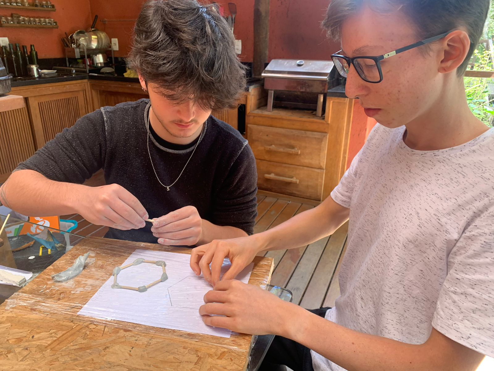
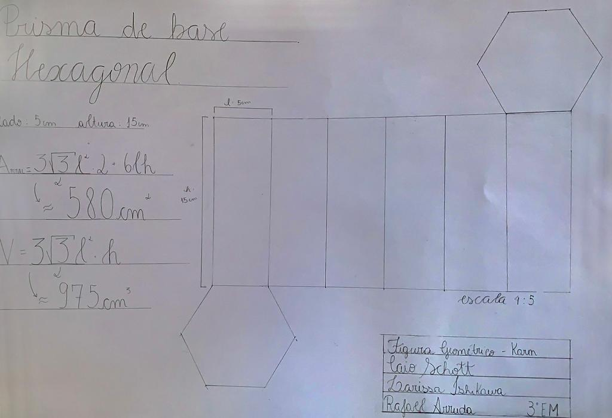
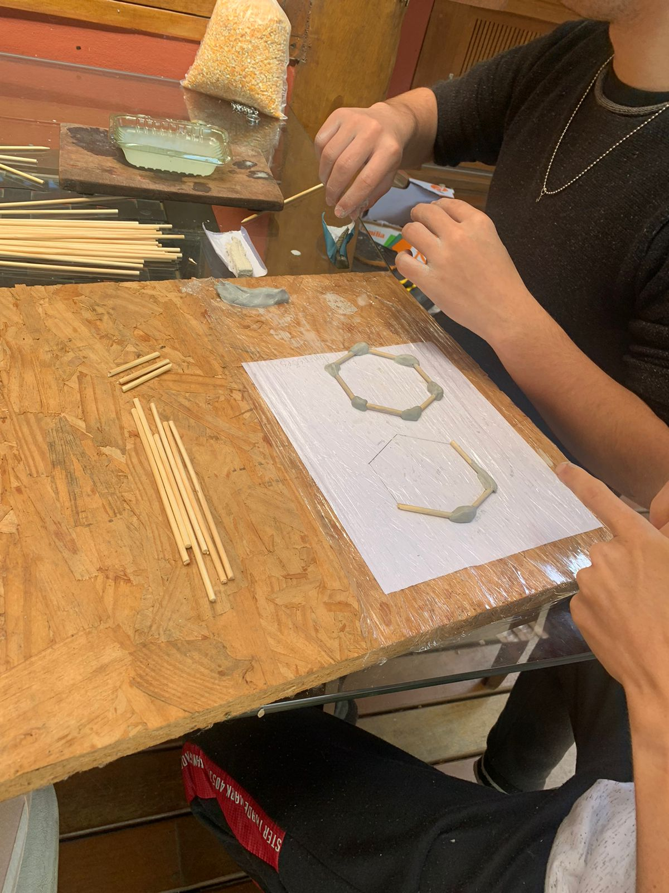
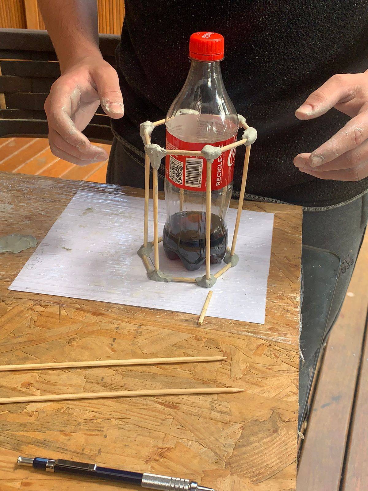
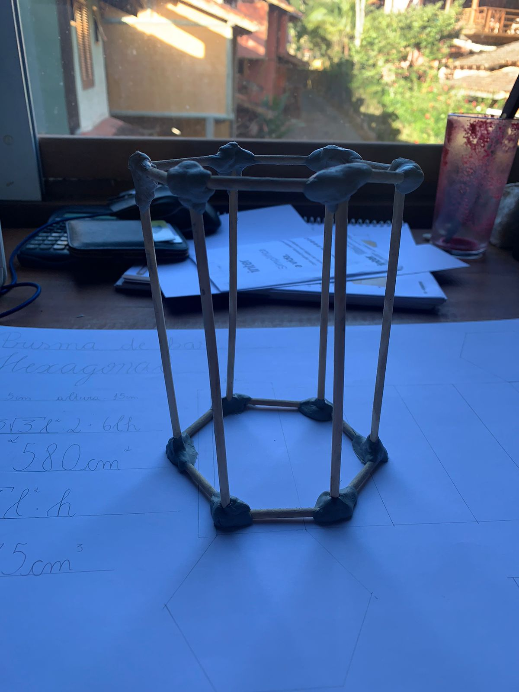

Prisma de base Hexagonal
Lado: 5cm | Altura: 15cm | Área Total: 580cm² | Volume: 975cm³

Desenvolvimento do trabalho
Fizemos um encontro no final de semana para produzirmos o prisma em 3D e o cartaz juntos, e aproveitamos para registrar alguns momentos da produção :)
- 
- 
- 
- 
- 